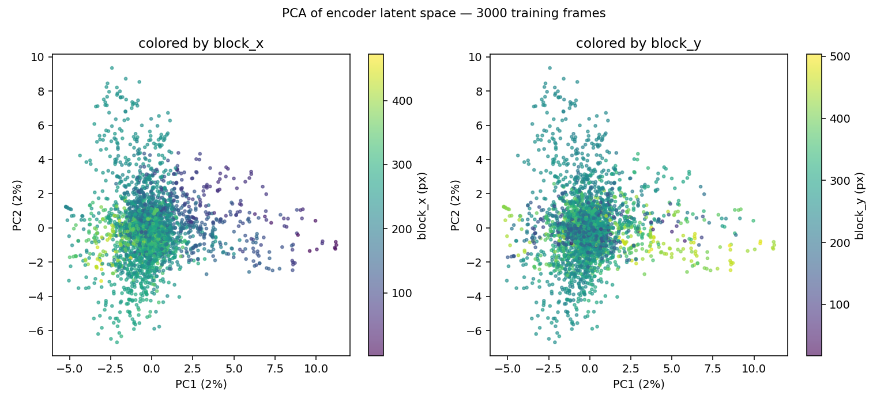
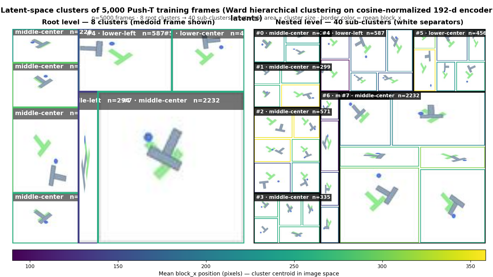
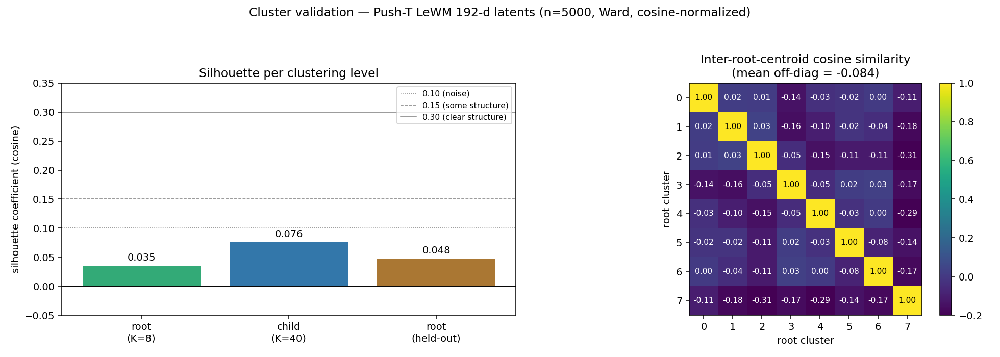

The world model — predicting the future, but only in latent space
LeWorldModel's defining choice is what it does not have: a pixel decoder. The encoder maps a 224×224 RGB frame to a 192-dimensional latent vector; the predictor outputs the next latent given a short history of latents and actions. There is no module that turns latents back into pixels. This page walks the architecture, then asks the hard question — does that predicted latent actually contain the future? At the planner's working horizon (k=5), the predictor's MSE (0.953) is only 8.2% lower than the trivial "predict last" baseline (1.038). The model is doing real work near the present, but its open-loop horizon is short.
1. The JEPA bet
LeWorldModel is a JEPA (Joint Embedding Predictive Architecture): it predicts in latent space, not in pixel space. The bet is simple — if the goal is control, the model never needs to draw a frame; it only needs to know enough about the next state to score candidate actions. Skipping the pixel decoder frees the network from spending capacity on wallpaper textures, lighting gradients, and other detail that is irrelevant to whether the T-block reaches its goal.
A useful metaphor: the latent is like a real-estate listing for the scene. It keeps things like "T at 30 degrees, table to left, pusher near top-right" and throws away the wallpaper texture. The encoder is the listing agent; the predictor is the agent guessing what next week's listing will say given a few recent listings and a planned move.
Trade-off (named explicitly): JEPA cannot render its predictions. You cannot show a user the frame the model "outputs" because the model never outputs a frame — only a 192-d vector. Visualization requires a workaround, covered in §5 below.
2. Architecture walk-through
Two learned modules, one notable absence:
- Encoder — ViT-tiny, 12 layers, 192-d hidden. Input: a single RGB frame, 3 × 224 × 224. Output: a 192-d latent vector zt.
- Predictor — 6-layer transformer. Input: 3 most recent latents (zt-2, zt-1, zt) plus 3 action embeddings. Output: predicted next latent ẑt+1.
- Pixel decoder —
absent by design. The struck-out box in the diagram below is the deliberate hole in the architecture.
Total: 18.03M parameters.
3×224×224 → ViT-tiny encoder (12 layers, 192-d) → latent zt (192-d). A history of 3 latents and 3 action embeddings feeds a 6-layer transformer predictor that outputs ẑt+1. 18.03M parameters total. The struck-out "Pixel Decoder" box is the architectural choice that defines the method.
3. Tensor shapes — one forward pass
Walking through it: a Push-T observation arrives as an RGB tensor of shape [B, 3, 224, 224]. The ViT-tiny encoder maps each frame to a 192-d vector, producing [B, 192]. The predictor reads a rolling window of the 3 most recent encoded latents — [B, 3, 192] — plus 3 action embeddings, and outputs the predicted next latent [B, 192]. The output and input live in the same 192-d space, which is what makes multi-step rollouts in latent space possible: feed ẑt+1 back in as if it were a real observation, shift the window, and predict again.
Footnote — action_block vs horizon: these are two distinct knobs that are easy to confuse. action_block=5 means the planner outputs 5 actions at a time, packed into a 10-dimensional vector (5 actions × 2-D Push-T action). horizon=5 means the planner predicts 5 steps ahead in latent space when scoring a candidate plan. The values happen to match in this config, but they refer to different things: action_block is about how the planner emits decisions; horizon is about how far the predictor is unrolled inside each candidate evaluation.
4. Does the latent contain the future?
The architecture only matters if the predictor's output is closer to the true next latent than a trivial baseline. So we encode held-out episodes, unroll the predictor for k steps, and compare predicted latent against encoded ground truth (MSE in the 192-d space). Two baselines anchor the scale: predict-last (just re-use zt as the prediction at every horizon) and random-pair (MSE between two randomly drawn latents, mean ≈ 1.245).

The per-horizon numbers (mean MSE, n=200 samples per horizon):
| Predictor steps k | Env steps | Model MSE | Predict-last MSE | Mean-latent MSE | Model vs predict-last |
|---|---|---|---|---|---|
| 1 | 5 | 0.104 | 0.139 | 0.485 | −25.2% |
| 2 | 10 | 0.327 | 0.407 | 0.542 | −19.6% |
| 3 | 15 | 0.559 | 0.658 | 0.589 | −15.1% |
| 5 | 25 | 0.953 | 1.038 | 0.661 | −8.2% |
| 8 | 40 | 1.201 | 1.259 | 0.703 | −4.6% |
| 10 | 50 | 1.274 | 1.354 | 0.728 | −5.9% |
| 12 | 60 | 1.340 | 1.460 | 0.764 | −8.2% |
| 15 | 75 | 1.328 | 1.464 | 0.785 | −9.3% |
The honest reading: at the planner's working horizon (k=5), the predictor's MSE (0.953) is only 8.2% lower than the trivial "predict last" baseline (1.038). The model beats identity, but barely — most of the lift toward task success comes from the planner, not the predictor's outright accuracy. By k≈8–10 the predictor's MSE has overshot the mean-latent baseline (0.703 at k=8): a constant predictor that always outputs the dataset's average latent would be more accurate than the trained model at long horizons. By k=15 the model MSE (1.328) is closing on the random-pair reference (1.245) — i.e. its prediction has roughly the geometry of a random latent draw. The model is doing real work near the present, but its open-loop horizon is short.
5. The NN-decoding trick — how we "see" what the model predicts
Because LeWorldModel has no pixel decoder, we cannot render what the predictor outputs. To visualize a rollout, we encode 20,000 training frames into latent space and build a nearest-neighbour index. For each predicted latent ẑt+k, we look up the closest training-set latent and display the original frame it came from. The top row is ground-truth observations; the bottom row is retrieval against the model's predictions.
Two things to keep separate when watching the video:
- The bottom-row pixels are real training frames, picked because the predictor's output landed near them in 192-d space. They are not the model's drawings.
- What the model is being judged on is whether the predicted latent is close to the encoded next observation. NN-retrieval is a presentation layer on top of that judgement; it inherits the predictor's error but adds a quantization step (you can only retrieve frames that exist in the index).
5a. The top two rows look identical — where does the gap actually live?
At low k, the cosine similarity between predicted and ground-truth latent is 0.998–0.999. The corresponding NN-retrieved frame is visually indistinguishable from ground truth. To make the structure of the drift visible, we add a third row: the per-pixel L1 difference, summed over RGB channels, displayed as a heatmap.
Even at k=10 the mean diff is under 1%. That isn't because the model is great — it's because Push-T scenes are dominated by background pixels that don't move. The diff localizes precisely where the predictor's error lives: on the manipulable object. This is consistent with §4's quantitative finding that the latent's position dimensions are what get predicted, accurately near k=1 and degrading by k≈8.
6. What's actually inside the 192-d latent? — Linear probes
The latent is a 192-dimensional vector with no human-interpretable axis. To find out what it encodes, we run a classic interpretability move: fit a linear regression from the latent to each scalar of the ground-truth env state, and report R². A high R² means the quantity is linearly decodable from the latent — i.e. the encoder is "registering" it. A low R² means either the latent doesn't carry that information, or it's encoded in a non-linear way.
Probe setup: encode 3,000 random training frames, 70/30 train/test split, RidgeCV linear regression. The Push-T dataset stores a 7-d state per frame: agent_x, agent_y, block_x, block_y, block_theta, agent_vx, agent_vy.

The pattern is clean and pedagogically important:
- Positions (block, agent): R² ≈ 0.95–0.98. The encoder is essentially a position registrar. The block's (x, y) position is linearly recoverable from the 192-d latent with very high fidelity — exactly the quantity the planner needs in order to compute distance-to-goal.
- Block orientation: R² ≈ 0.81. Also linearly decodable, but less cleanly. The drop is consistent with the periodicity of angle (a linear regression can't natively handle the wraparound at 0 / 2π).
- Velocities: R² ≈ 0.08–0.13. Not encoded. This is mechanistically obvious in hindsight: the encoder sees one frame at a time, and a single frame contains no motion information. To recover velocity, you need the difference of consecutive frames — which is exactly what the predictor's 3-frame history (T=3) gives it.
That last point — that velocity is not in the encoder's latent but the predictor still needs it — is the cleanest explanation we have of why LeWorldModel's predictor takes a history of three latents as input rather than just one. The predictor's first job, implicitly, is to compute "velocity" from successive position registrations.
6a. PCA: the latent has spatial structure
A separate sanity check: project all 3,000 encoded latents to 2D via PCA, then color each point by its true block_x (left panel) and block_y (right panel). If the latent has coherent spatial structure, color gradients should emerge in the PCA plot.

The mechanistic takeaway: the encoder is a position registrar with smooth spatial structure. The predictor's job is to evolve that registration forward under given actions. The planner's job is to find the action sequence whose registration evolution lands near the goal's registration. That triangle is the whole system — no policy network, no pixel rendering, no symbolic state ever materializes. Everything happens in this 192-d space whose anatomy we just charted.
7. Browsing the manifold — hierarchical clusters of latents
The probes in §6 told us what the latent registers (positions cleanly, orientation roughly, velocity not at all). They did not tell us how the encoder organizes that information across the 192-d space as a whole. To probe geometry rather than decodability, we encode 5,000 training frames into latent space and run Ward hierarchical clustering over the resulting point cloud, then cut the dendrogram at two levels: 8 root clusters and, within each root, up to 5 sub-clusters (40 leaves total). The result is a treemap: each rectangle is a cluster, sized by how many frames fell into it, tiled with a representative-frame thumbnail.
The static view below is a snapshot; the live page lets you hover over any cell to see size and cluster ID and click to zoom into the sub-clusters of a root. Think of it as a browsable atlas of the encoder's "what it thinks is nearby" relation.

7a. How real is this clustering?
A treemap is a seductive visualization — it always looks like structure even when the underlying partition is weak. Before reading anything into the cells, three diagnostics, all measured on the same 5,000-frame latent set:

- Silhouette ≈ 0.035 (held-out split: 0.048). Low. In 2-D toy datasets this would read as "no clusters." In 192-d, where any two random unit vectors are nearly orthogonal, this is consistent with diffuse but real structure rather than crisp islands. The held-out value being close to the in-sample value means the assignments generalize — the clustering is not overfit, it is just soft.
- Inter-centroid mean cosine ≈ −0.08. The 8 root centroids are nearly orthogonal (a slight negative mean is what you expect when 8 vectors are forced to span the bulk of the cloud). So the centroids really do point in different directions — the cluster summaries are distinct even when the members overlap.
- Local probe R² ≈ 0.91–0.99 (mean ≈ 0.96) vs global probe R² ≈ 0.93. Within each cluster, a local linear probe to ground-truth state is very accurate. But a single global probe trained on all 5,000 latents at once already gets R² ≈ 0.93. The clustering buys roughly 3 percentage points of additional decodability — real, but marginal. The encoder's spatial organization is mostly already linear at the global scale (§6); the clusters are not unlocking a hidden non-linearity.
- Heavy size imbalance. Root cluster #7 contains 2,232 of 5,000 frames (44.6%). The other seven roots share the remaining 55%. Treat sub-cluster geometry as suggestive, not definitive — large clusters are easier to split into plausible-looking children for trivial reasons.
Honest takeaway. The latents have real but diffuse structure. The encoder's similarity metric groups frames into geometrically coherent regions — the centroids are near-orthogonal, and held-out assignments are stable — but those regions overlap heavily in 192-d space. Calling the eight roots "phases the model invented" would be overclaiming: silhouette is low, the partition is size-imbalanced, and clustering adds only marginal lift over a single global probe. What the treemap is good for: browsing what the model considers "nearby" frames, surfacing dataset coverage gaps (which root has very few members? which sub-cluster looks visually homogeneous?), and acting as a third independent witness — after probes (§6) and PCA — that the encoder's 192-d space is organized rather than random. The planner page picks up this thread directly: CEM search over actions is search through this same latent geometry.
8. No decoder = no reconstruction tax
It is tempting to read "no pixel decoder" as a limitation. It is closer to a feature. In pixel-prediction world models, a large fraction of model capacity is spent reconstructing task-irrelevant detail — wallpaper textures, the exact gradient on a table edge, motion-blur on background pixels. The reconstruction loss treats those details as first-class, because pixel MSE has no notion of what matters for control. The model pays a "reconstruction tax" on parameters and gradient signal that buys nothing for the planner.
Latent-space prediction removes that tax. Every parameter of the predictor focuses on the dynamics in encoder-space — the same space the planner scores plans in. The encoder is still trained (via the upstream JEPA objective on the LeRobot Push-T dataset), but its job is to produce a representation that is predictable from history + actions, not one that is invertible to pixels. The two objectives compete in pixel-prediction models; JEPA refuses to host that fight.
That framing also reframes §4's honest result: the predictor is mediocre at long horizons, but it is mediocre on a representation that was shaped to make control work, not on raw pixels. Whether that trade is paying off is exactly what the next page — the planner — has to demonstrate.
9. What's next
The world model only predicts. It does not choose actions. Choosing actions is the planner's job — sampling 300 candidate sequences, rolling each one out in latent space using the predictor on this page, scoring by a cost-to-goal computed entirely in latent space, refining over 30 CEM iterations, taking the first action, and replanning. That's the next page.